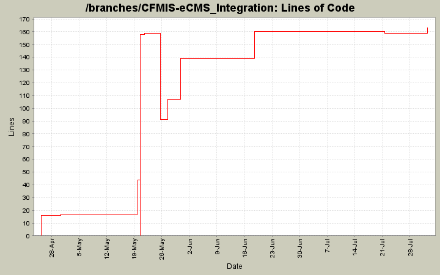

[root]
 BumbleBee
(2 files, 1631 lines)
BumbleBee
(2 files, 1631 lines)
 CFMConstReports
(25 files, 19798 lines)
CFMConstReports
(25 files, 19798 lines)
 CFMIS-Gui-Tests
(52 files, 7570 lines)
CFMIS-Gui-Tests
(52 files, 7570 lines)
 Properties
(1 files, 35 lines)
Properties
(1 files, 35 lines)
 CFMIS.Service
(4 files, 411 lines)
CFMIS.Service
(4 files, 411 lines)
 Properties
(1 files, 35 lines)
Properties
(1 files, 35 lines)
 CFMISServiceWebSetup
(1 files, 1233 lines)
CFMISServiceWebSetup
(1 files, 1233 lines)
 SQL
(48 files, 445929 lines)
SQL
(48 files, 445929 lines)
 mCMIS
(95 files, 27228 lines)
mCMIS
(95 files, 27228 lines)
 Model
(1 files, 83 lines)
Model
(1 files, 83 lines)
 BusinessLayer
(5 files, 1208 lines)
BusinessLayer
(5 files, 1208 lines)
 DataLayer
(23 files, 5762 lines)
DataLayer
(23 files, 5762 lines)
 History
(4 files, 1927 lines)
History
(4 files, 1927 lines)
 Properties
(1 files, 35 lines)
Properties
(1 files, 35 lines)
 Queries
(66 files, 34097 lines)
Queries
(66 files, 34097 lines)
 UserControls
(15 files, 1148 lines)
UserControls
(15 files, 1148 lines)
 images
(16 files, 0 lines)
images
(16 files, 0 lines)
 js
(2 files, 250 lines)
js
(2 files, 250 lines)
 styles
(2 files, 678 lines)
styles
(2 files, 678 lines)
 mCMISIntegration
(11 files, 3190 lines)
mCMISIntegration
(11 files, 3190 lines)
 INBOUND
(1 files, 5354 lines)
INBOUND
(1 files, 5354 lines)
 bin
(3 files, 1687 lines)
bin
(3 files, 1687 lines)
 Deployment
(5 files, 1780 lines)
Deployment
(5 files, 1780 lines)
 mCMISSetup
(1 files, 1580 lines)
mCMISSetup
(1 files, 1580 lines)
 mCMISTests
(9 files, 1645 lines)
mCMISTests
(9 files, 1645 lines)

| Author | Changes | Lines of Code | Lines per Change |
|---|---|---|---|
| lhenry | 14 (100.0%) | 293 (100.0%) | 20.9 |
Modified congressmerge to use config file. Several mods to fmscontracts for bug fixes.
4 lines of code changed in 1 file:
Keeping up to date.
0 lines of code changed in 1 file:
Added back reports.
21 lines of code changed in 1 file:
sdfsdfs
32 lines of code changed in 1 file:
Readded the mcmistests. Modified the tests for the fmsrecord change.
16 lines of code changed in 1 file:
Readded the mcmis project. I don't know what causes this.
15 lines of code changed in 1 file:
Better Greens.
2 lines of code changed in 1 file:
Renamed the solution file.
158 lines of code changed in 1 file:
Renamed to CFMIS.
0 lines of code changed in 1 file:
Updating with some changes from
1 lines of code changed in 1 file:
Several refactorings related to new Web Service.
27 lines of code changed in 1 file:
This is a checkin of stuff that compiles and should work for the ui stuff everyone is working on.
1 lines of code changed in 1 file:
Sanity Commit
16 lines of code changed in 2 files: